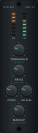
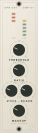
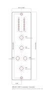

Practical
The front panel
Nine functions, two meters and two mounting screws, in a space 38 mm wide. Almost every decision on this panel is a consequence of that.

What the panel has to fit
A 500-series module is 1.500″ × 5.250″ — 38.10 × 133.35 mm. Two mounting screws sit on the vertical centreline, 125.43 mm apart, which puts them 3.96 mm from each end. They are countersunk, so a screw head occupies a 5.72 mm circle in the middle of the panel top and bottom.
That leaves a usable strip roughly 34 mm wide and 120 mm tall, interrupted at both ends. Into it go five knobs, four switch functions, fourteen meter LEDs and the legends for all of it. There is no arrangement where everything is comfortable; every layout below trades one thing for another.
The controls
| Control | Ref | What it does | More |
|---|---|---|---|
| THRESHOLD | RV3 | How loud before compression starts | Sidechain |
| RATIO | RV4 | How much gain reduction per dB over threshold | Sidechain |
| ATTACK | RV5 | How fast it clamps down, 2.7–50 ms | Sidechain |
| RELEASE | RV6 | How fast it lets go, 47 ms–2.2 s | Sidechain |
| MAKEUP | RV2 | Level put back after compression, 0 to +21 dB | Output |
| BYPASS | SW1 | Hard bypass — rack straight through | Output |
| HPF | SW3 | Defeats the 72 Hz sidechain filter | Sidechain |
| KEY | SW2 | Detector listens here, or to the aux input | Sidechain |
| LINK | SW4 | Ties this detector to the module beside it | Sidechain |
Reading the meters
Two seven-segment bargraphs sit at the top, in a recessed window so they read against the panel.
- GR fills downward from the top as the compressor clamps. More lit means more gain reduction. Dark means it is not working — either the threshold is above the signal or nothing is getting through.
- LVL fills upward from the bottom, green through amber to red, showing what is leaving the module.
The meters have a circuit now
The fourteen LEDs are driven by sheet 7: two LM391x display drivers in dot mode, fed by a peak detector and a level shifter. They add about 29 mA to the +16 V rail, taking the module to roughly 90 mA of the 130 mA the rack allows.
Three layouts
The same nine functions, arranged three ways. The generator builds any of them from one definition, so choosing is a command-line flag rather than a redraw.
| Layout | Switches | Holes | The trade |
|---|---|---|---|
pull | None — every switch is a pull on a pot; LINK is an internal jumper | 21 | Fewest parts and cheapest to build. Bypass is slow and uncertain, and you cannot bypass without touching the makeup knob. |
toggle | Four toggles flanking THRESHOLD and RATIO | 25 | Every function is one positive movement, nothing hidden, bypass instant. Most parts of the three. |
concentric | Lit BYPASS button and two toggles; LINK on a pull | 22 | Dual-concentric knobs free the space, but they are dearer, harder to source, and their inner shafts cannot carry a printed scale. |
Why the switches sit where they do
On the toggle layout they flank the knob they belong to: HPF
and KEY either side of THRESHOLD, because all three are sidechain controls you
adjust together; LINK and BYPASS either side of RATIO,
because both are set once and then left.
That grouping is the whole argument for this layout. A switch next to the control it modifies needs no label to explain the relationship.
This is the layout the schematic already matches
The toggle layout uses four discrete switches — exactly what
SW1–SW4 are in design.py. The other two need the
schematic changing: pull wants pull-switch pots, and concentric
wants dual-concentric pots plus a latching pushbutton.
Small things that took several attempts
- ATTACK and RELEASE share a row, so they get a smaller legend and no
printed numerals. Two full scales put their
0and10on top of each other in the gap between the knobs. - Nothing is printed at 12 o'clock on a knob scale. On a panel this tight the top of one scale lands in the label of the control above it, every time.
- The countersinks own the centreline at both ends. Anything near the top
or bottom has to sit off-centre, which is why BYPASS is where it is on the
concentriclayout.
The other finish
A second, lighter treatment exists: flat graphic rather than skeuomorphic, printed dot scales with 0–10 numerals, thin metal bat toggles. Same holes, same drawing, same DXF — only the artwork differs.

Machining
The drawing below is 1:1 and dimensioned. A full drill schedule — every hole with its
coordinates, diameter and the hardware it suits — is in panel/README.md in
the repository, alongside the DXF.

Before you have one made
Hole sizes assume a 9 mm pot bushing, a mini toggle and 2 mm LEDs. Check them against the parts you actually buy — bushing diameters vary between manufacturers, and half a millimetre is the difference between a push fit and a rattle. Depth clearance between knobs, switch bodies and the PCB is not modelled at all: this is a 2D drawing.